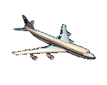

Pour voyager autour du globe, il existe "des billets tour du monde" qui permettent d’effectuer, à des tarifs avantageux, de nombreux vols autour de la planète... Au delà d’une simple économie d’argent, le billet tour du monde permet aussi de planifier son parcours (même s’il est possible, par la suite, de changer les dates des vols à moindre frais), ce qui peut s’avérer utile et pratique puisque l’on n’aura plus besoin de gérer l’achat des billets d’avion une fois partis. Les prix des billets varient selon les compagnies empruntées, le nombre d’escales, le nombre de miles parcourus ou le nombre de continents traversés.
Il faut savoir que trafic aérien mondial est axé sur trois régions : l’Amérique du Nord, l’Europe et l’Asie du Sud-Est. Si l’on suit ce parcours, le billet ne sera pas cher, même si les distances parcourues sont importantes. Il y a beaucoup de concurrence sur les lignes aériennes classiques, ce qui fait baisser les prix. A l’inverse, ajouter un détour par un pays en dehors des lignes aériennes majeures augmentera fortement le prix du billet. Aussi le choix des escales est-il très important.
Les alliances proposant des billets tour du monde
Deux grandes alliances de compagnies proposent des billets tour du monde :
 One World :
One World :
La formule "One World Explorer" est intéressante pour un tour du monde avec de nombreux stops et pour ceux qui ne veulent pas suivre les routes conventionnelles puisque ce ticket n’est pas basé sur les miles, mais sur le nombre de zones parcourues. Ce pass est particulièrement adapté si l’on souhaite faire l’Amérique du Sud.
Le monde est divisé en 6 zones géographiques (Europe, Afrique, Asie, Océanie, Amérique du Sud, Amérique Centrale-Amérique du Nord) déterminant les prix. Il est obligatoire de voyager sur 3 zones minimum au choix sans possibilité de retour en arrière.
Pass 3 zones : 2 000 € ; 4 zones : 2 400 € ; 5 zones : 2 900 € ; 6 zones : 3 400 €.
Il est possible d’effectuer un maximum de 4 vols par zone et il suffit d’ajouter 100 € pour chaque escale supplémentaire. Il faut que la totalité du nombre de vols effectués n’excède pas 20.
Les dates des réservations des vols sont modifiables (théoriquement sans supplément) ainsi que les escales sous réserve de payer 75€. Les pass est remboursable sans frais en cas de non utilisation et partiellement selon les vols effectués une fois le voyage commencé.
 Star Alliance :
Star Alliance :
Cette formule est intéressante pour la plupart des trajets Tour du monde et pour ceux n’allant pas en Australie.
Le prix est calculé en fonction du nombre de miles parcourus :
Pass jusqu’à 26 000 miles : 1949€ ; jusqu’à 29 000 miles : 2299€ ; jusqu’à 34 000 miles : 2649€ ; jusqu’à 39 000 miles : 3099€.
Il est possible d’effectuer de 3 à 15 stops dans la limite des miles définis (de 26 000 à 39 000 miles). Il est obligatoire de commencer et de finir son voyage dans le même pays, et également d’effectuer un vol transatlantique et un transpacifique.
Les dates des réservations des vols sont modifiables (théoriquement sans supplément) ainsi que les escales sous réserve de payer 75€.
Pour ces deux formules One World et Star Alliance, il est nécessaire de construire son itinéraire en fonction des liaisons aériennes des compagnies partenaires, ce qui peut amener à modifier son parcours original. Mais il est bien sûr possible d’acheter des vols complémentaires sur d’autres compagnies. Il faut également savoir que ces pass ont une durée de validité d’un an maximum ! Par contre, en terme d’avantage, on bénéficie de la renommée des compagnies (intéressant en cas de pertes de billets ou de réclamation) et de la facilité de réservation (site Web, téléphone...). De plus, ces formules permettent de cumuler des miles sur une même carte pour l’ensemble des compagnies partenaires.
Les agences proposant des billets tour du monde
Il existe également des voyagistes spécialisés dans les tours du monde : l’agence Les connaisseurs du voyage est une des plus réputées. Cette agence propose des formules "tour du monde" toutes faites dont les prix des billets commencent à 1500€. Elle peut également effectuer un devis spécifique pour l’itinéraire désiré, mais dans ce cas, les prix grimpent vite !
L’agence Voyageurs du Monde propose également des billets tour du monde mais demande 100€ pour faire un devis !!!!... alors que les Connaisseurs du voyage le font gratuitement.
Nous avions entendu parler de Directours qui proposait, paraît-il, des devis pour des tours du monde en partenariat avec Star Alliance. Malgré notre insistance, nous n’avons jamais eu de réponse de leur part... Dommage !
Notre choix
Nous avons appelé Lufthansa (0 826 10 33 34) pour établir avec eux un devis pour le pass Star Alliance. Malheureusement, ils n’ont pas de compagnie qui passe par l’Australie et étant donné que c’est l’une des escales primordiales pour nous, nous avons abandonné cette option.
Notre choix s’est porté sur la formule « One World Explorer » qui ne tient pas compte du nombre de miles parcourus. Nous nous sommes procurés nos billets directement auprès de British Airways (0 825 825 900). Par contre, nous avons eu beaucoup de soucis pour le vol Auckland-Santiago qui était déjà complet pour juin, juillet et août 2005 !! Un an à l’avance ! En fait, ils ont des quotas limités sur certains vols pour les billets tour du monde. Ce vol, partant de la Nouvelle Zélande pour rejoindre l’Amérique du Sud, étant très demandé par les tour-du-mondistes, les quotas sont vite remplis. Après moultes péripéties, nous avons réussi à trouver un vol Sydney-Santiago. De la Nouvelle Zélande, il nous faudra donc repartir sur l’Australie (alors qu’on y sera déjà passés) pour pouvoir atteindre le Chili. Enfin, l’essentiel, c’est d’avoir pu trouver une solution acceptable sans que cela ne fasse augmenter notre forfait tour du monde.
N° de téléphone des compagnies aériennes
| Compagnie | Lieu | Téléphone | Horaires |
|---|---|---|---|
| British Airways | France | 0825 825 040 (0.15 euro ttc/min) | lundi-vendredi : 09h00-18h00, samedi : 09h00-13h00 |
| British Airways | Londres | 0870 850 9 850 (from the UK) | lundi-dimache : 06h00-21h45 |
| Cathay Pacific | Inde - Mumbai | Réservation : 91(022) 5657 2222, Billeterie : 91(022) 5657 2222, Aéroport : 91(22) 2682 9195/96, Flight Enquiries : 91 (22) 5657 2277 | |
| Cathay Pacific | Thaïlande - Bangkok | Réservation : 66(2) 263-0606, Billeterie : 66(2) 263-0616, Aéroport : 66(2) 535-1111 | |
| Cathay Pacific | Hong Kong | Réservation : (852) 2747-1888, Billeterie : (852) 2747-1577, Aéroport : (852) 2747-1888 | |
| Cathay Pacific | Pékin | Réservation : 10800-852-1888, Billeterie : 86-10-84868532 | |
| Qantas Airways | Bali-Denpasar | (0361) 751472-3 | Mardi au samedi |
| Qantas Airways | Australie | 13 13 13 | |
| Qantas Airways | Nouvelle-Zélande-Auckland | 0800 808 767 | |
| Qantas Airways | Nouvelle-Zélande-Christchurch | 0800 808 767 | |
| Lan Airlines | Australie-Sydney | (61-2) 92442333 | |
| Lan Airlines | Chili | 600 526 2000 | lundi-vendredi : 9h00-18h45, samedi : 10h00-12h45 |
| Iberia | Chili | Billets, résa : (56 2) 870 1070, Informations : (56 2) 870 1000, Aéroport : (56 2) 690 1078 | |
| Iberia | Espagne | 902 400 500 |
Bilan au retour
Nous sommes vraiment très contents d’être passés par l’alliance One World qui est restée très professionnelle jusqu’au bout. Les avions pris ont toujours été impeccables, et les compagnies sont de confiance. Lorsqu’on a volé le sac d’Eve-Laure avec tous les billets d’avion à l’intérieur, l’agence British Airways de Hong-Kong les a réimprimés immédiatement (moyennant 30 euros de frais). Nous avons plusieurs fois changé les dates de départ de nos avions et il n’y a jamais eu aucun souci ! Il y a même un vol que nous n’avons pas pu prendre à cause de l’entorse d’Eve-Laure. Nous ne nous sommes tout simplement pas présentés à l’aéroport et ça n’a posé aucun problème pour la suite ! Je recommande cette alliance qui a toujours été serviable et arrangeante avec nous.